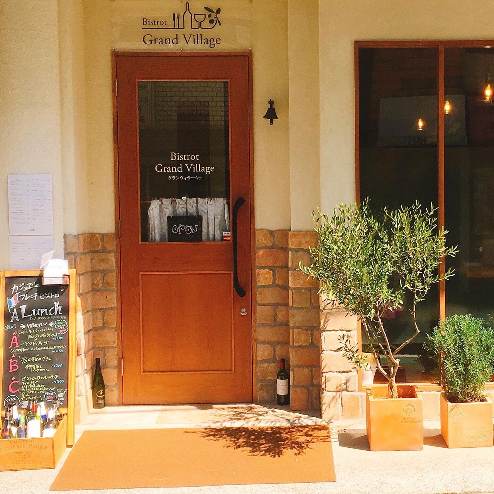
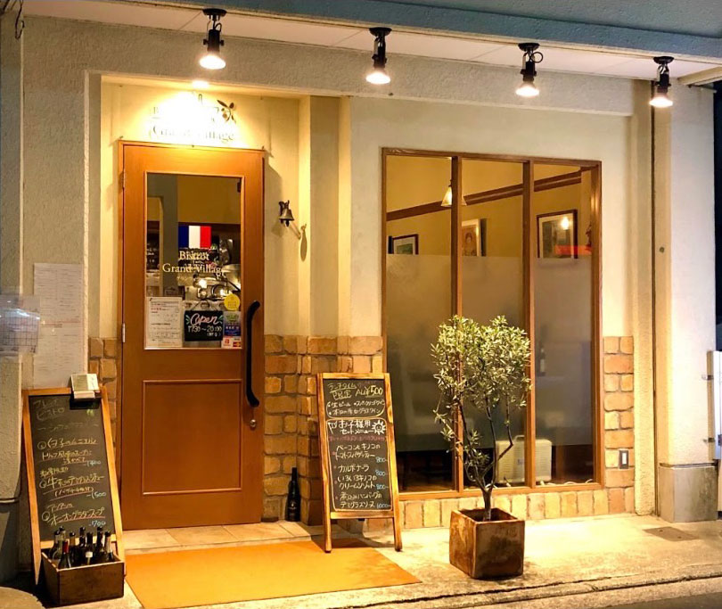
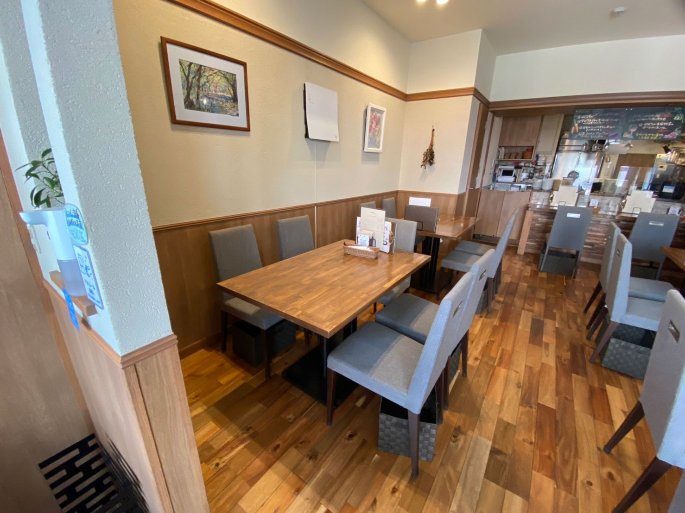
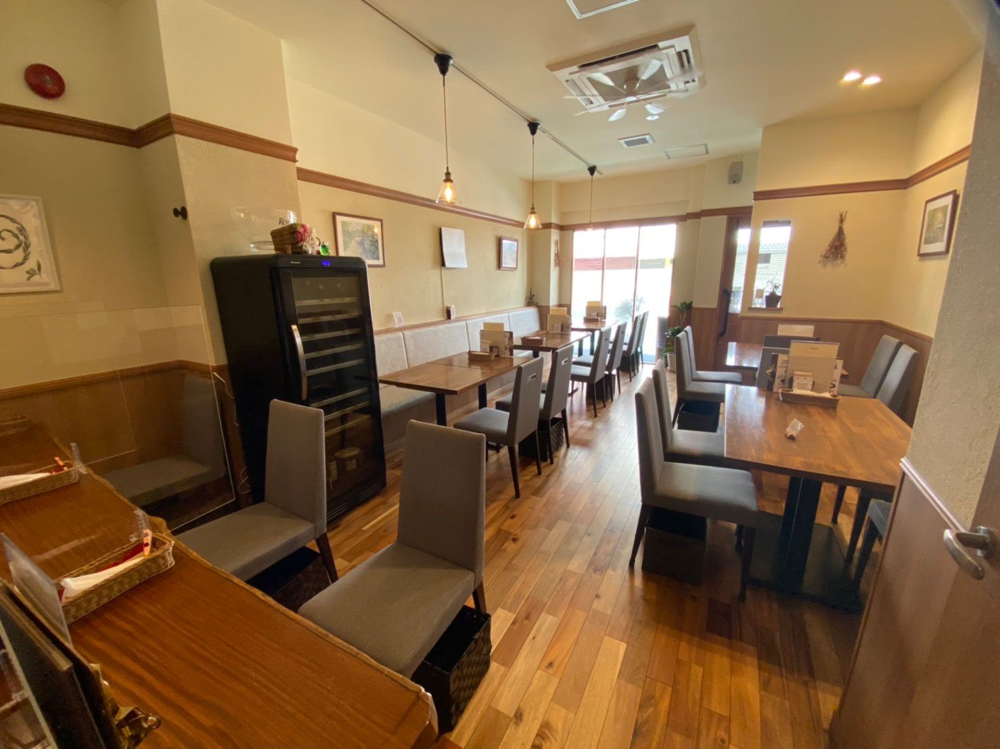
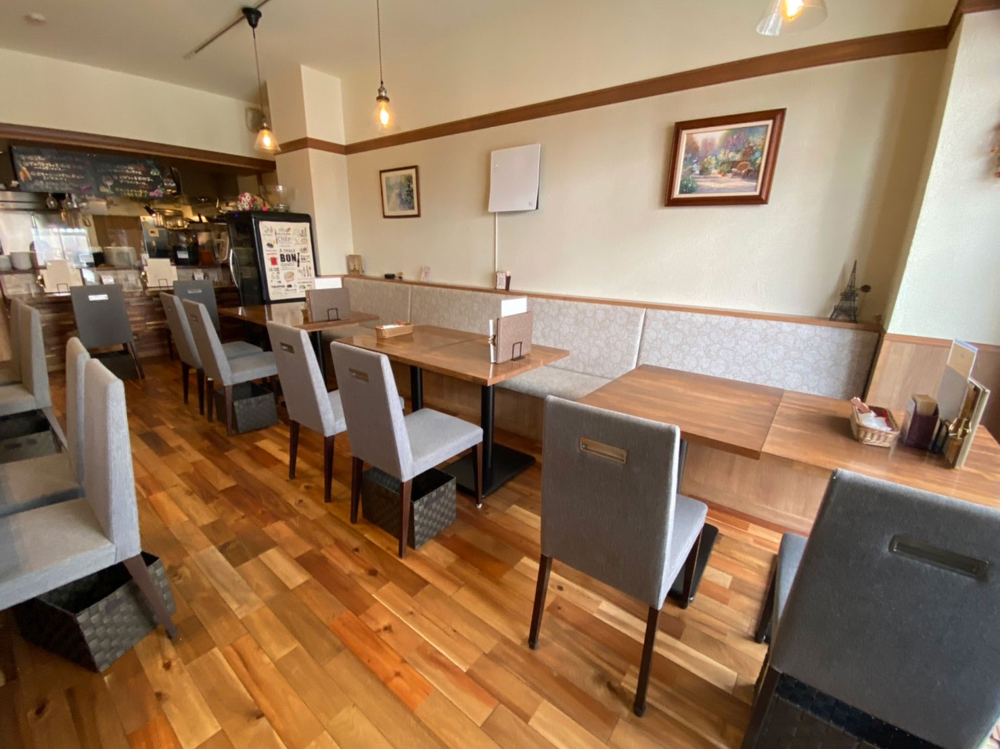
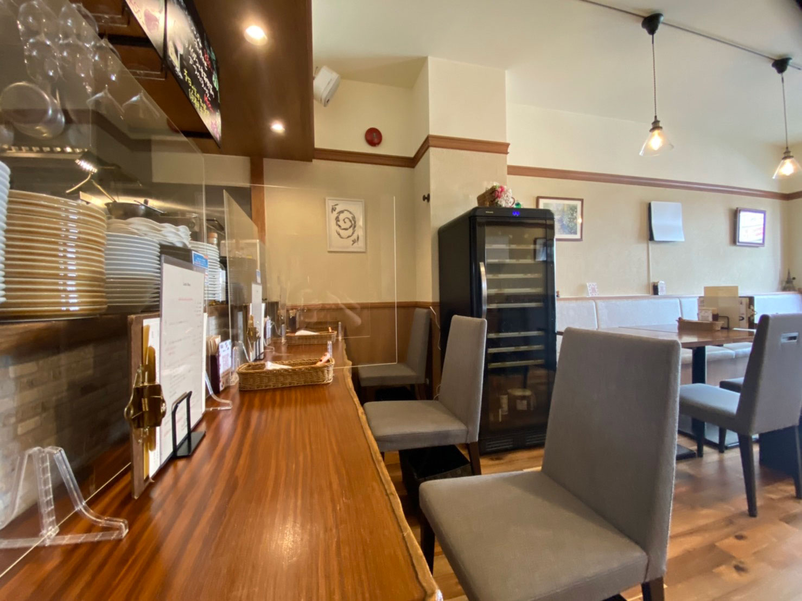

Yamate Casual French
横浜山手で、気軽に立ち寄れる温かなフレンチを。
料理も空間も、肩肘張らずに楽しめる一軒です。
コンセプトConcept
料理の世界に入った時から生まれ育った地元で自分のお店を出す事を夢見ていました。
堅いイメージのあるフレンチですが当店は幅広い年齢層の方に立ち寄って頂ける様な温かい雰囲気のお店となっております。是非御家族、御友人を誘って御来店下さい。
コース料理や貸し切りパーティーも受け付けています！お気軽にご相談下さい。


シェフプロフィールChef Profile

大村 航介Kosuke Omura
高校卒業後 エコール辻 東京フランス・イタリア料理専門カレッジに入学し料理の基礎を学ぶ。
卒業後 横浜元町霧笛楼、トラットリア オ・プレチェネッラ、うかい亭を経て 関内ボンマルシェ でオープニングより店長兼料理長として携わる。
お店の雰囲気Ambience






1 / 6
ギャラリーGallery
画像をクリック・タップで拡大します


アクセス・営業時間Access & Hours
- 住所
- 〒231-0846
神奈川県横浜市中区大和町2-50-7
ヴィラ山手1F
JR京浜東北根岸線 山手駅より１分 - 電話
- 045-305-6619
- 定休日
- 日曜日、月曜日
火曜日のランチ（祝日の場合は変更あり）
| 月 | 火 | 水 | 木 | 金 | 土 | 日 | |
|---|---|---|---|---|---|---|---|
| 11:30〜14:30 (L.O. 14:00) |
× | × | ○ | ○ | ○ | ○ | × |
| 17:30〜22:00 (L.O. 21:00) |
× | ○ | ○ | ○ | ○ | ○ | × |